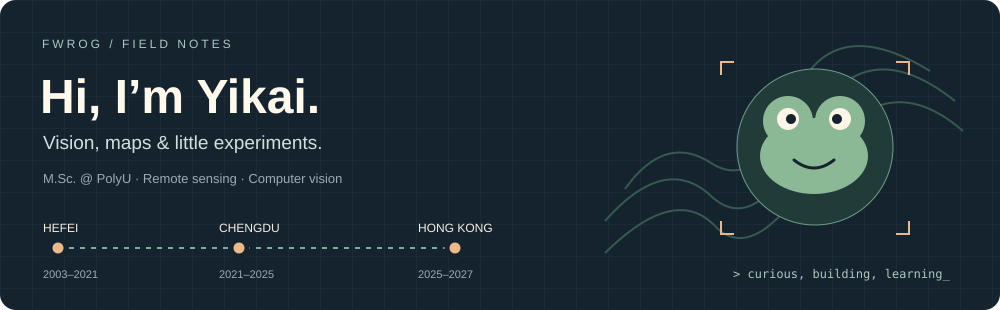

Website · Email · ResearchGate · ORCID
🐸 A little about me
I’m Yikai Wu / 吴艺楷, an M.Sc. student at The Hong Kong Polytechnic University. I work with images, depth and geospatial data—and enjoy turning research tasks into useful little tools.
- 🔬 Working on: multi-view RGB-D defect measurement and urban street-view analysis.
- 🌍 Interested in: remote sensing, computer vision and multimodal perception.
- 🎬 A side project: exploring Hong Kong through its film locations.
🛠️ Things I’m building
| Project | What you’ll find |
|---|
| 🌍 gee-agent-skill | AI-assisted Earth Engine workflows: plan, generate, validate and trace. Includes NDVI examples and product-comparison reports. Python · GEE |
| 🎬 HKFilmMap | A Hong Kong film-location explorer with maps, scene check-ins and route planning. Java · Android · SQLite |
| 🧭 Personal website | Research, projects, campus life and the places along the way. Jekyll · English / 中文 |
🧰 On my workbench
Vision OpenCV · RGB-D · YOLO · NeRF
Geospatial Google Earth Engine · GIS · HLS · FLUXNET
Code Python · MATLAB · Java · C/C++ · Git
中文 · 关于我
你好，我是吴艺楷，目前在香港理工大学攻读城市信息学与智慧城市硕士，本科就读于西南交通大学遥感科学与技术专业。
我关注遥感、计算机视觉和多模态感知，目前在做多视角 RGB-D 缺陷量测与城市街景分析。也喜欢写一些地图应用和研究工具，比如香港电影取景地地图，以及辅助 Earth Engine 分析的 skill。
合肥（2003–2021）→ 成都（2021–2025）→ 香港（2025–2027）。更多研究与校园生活见个人主页。
📍 Hong Kong · Happy to chat about maps, vision, or something you’re building.